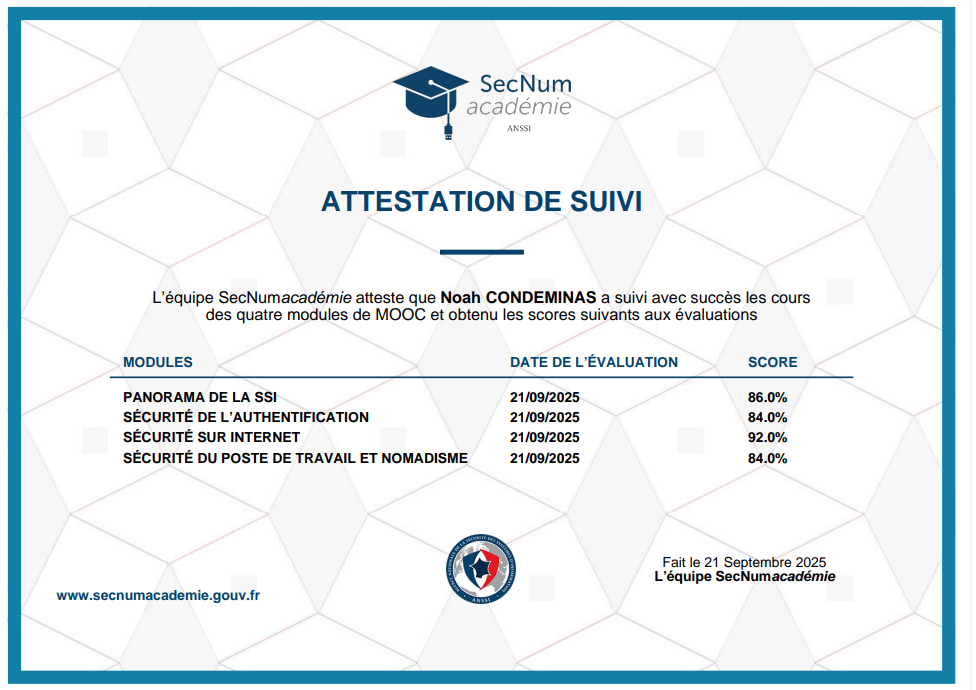
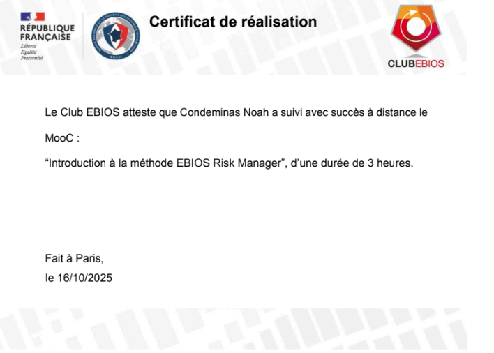
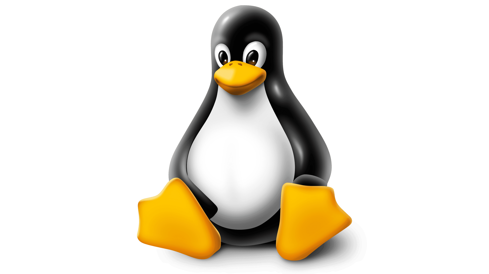
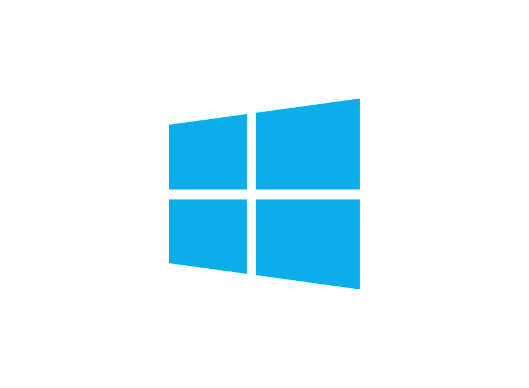
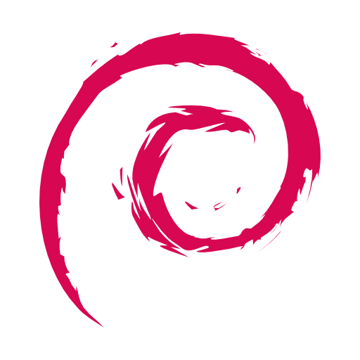
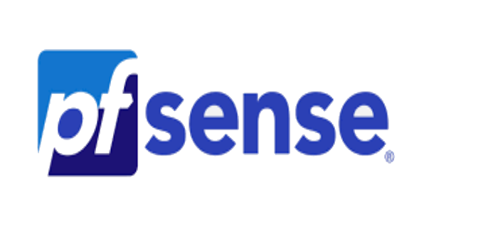

NOAH CONDEMINAS
Bienvenue sur mon portfolio !
A propos
Présentation
Je suis actuellement étudiant au lycée Jean Lurçat en première année de BTS SIO (Services Informatiques aux Organisations)
dans l'option SISR (Solutions Infrastructures Systèmes et Réseaux) qui est une option spécialisée pour le réseau.
Actuellement toujours en cours d'étude, je vous propose sur ce portfolio de retrouver ci-dessous les différentes études, et
projet professionnel que j'ai pu entreprendre durant ma scolarité.
Vous retrouverez ci-dessous mon CV ainsi que mes différents projets.
Qu'est ce que le BTS SIO ?
en deux ans, dans les métiers d'administrateur réseau ou de développeur. Cette formation peut être suivie soit en alternance, d'une durée de 12 à 24 mois, soit en initial, avec
un minimum de 10 semaines de stage en entreprise, réparties sur une période de 2 à 3 mois, afin de se confronter aux réalités du monde professionnel.
Elle propose deux spécialités :
SLAM :
langages, tester et déployer des solutions logicielles.
- Analyste-programmeur
- Développeur / Développeuse d’applications mobile
- Technicien / Technicienne informatique
- Développeur / Développeuse web
- Intégrateur web
SISR :
à sécuriser une infrastructure et à proposer des solutions pour optimiser la performance d'un réseau.
- Administrateur systèmes et réseaux
- Technicien / Technicienne support
- Technicien / Technicienne réseau
- Gestionnaire d’infrastructures informatiques
- Responsable sécurité des systèmes d’information junior
Mes certifications :


- Découvrez l'univers de la cibersécurité
- Concevez votre réseau TCP/IP
- Administrez une architecture réseau avec CISCO
Mes compétences réseaux :
Toutes ces compétences ont été acquises de différentes façons. Elles ont été acquises durant mes études en BTS SIO et d'autres de ma propre
initiative sur mon temps libre.
- Administration et configuration réseau
- Configuration de routeurs et switchs
- Gestion des adresses IP et VLAN
- Plan d’adressage réseau
- Protocoles et services réseau
- TCP/IP, UDP, ICMP
- Services réseau : DNS, DHCP, HTTP, FTP, SMTP
- Protocoles sécurisés : HTTPS, SSH, VPN
- Sécurité réseau
- Pare-feu et filtrage
- Authentification et permissions
- Détection et prévention d’intrusions
- Virtualisation et réseaux d’entreprise
- Réseaux virtuels avec VMware
- Machines virtuelles pour tests
- Réseaux hybrides physique/virtuel
- Documentation et gestion de projet
- Schémas réseau et topologies
- Procédures d’installation et de maintenance
Mes outils




.png)
Mes projets professionnels
Stage deuxième année BTS SIO
Voir projetStage première année BTS SIO
Voir projetMes projets de BTS
Projet 1 : titre du projet
Projet 2 : titre du projet
Projet 3 : titre du projet
Projet 4 : titre du projet
Mon parcours scolaire
BTS SIO option SISR 2025-2027
BAC GENERAL option MATH-NSI 2022-2025
Brevet des collèges 2018-2022
Ma veille technologique
Qu'est ce que la veille ?
La veille technologique est un processus de collecte, de tri et d’analyse des informations nouvelles et pertinentes dans
le domaine de la technologie. Elle permet à une entreprise ou un individu de rester informé des dernières tendances,
innovations et avancées technologiques qui peuvent influencer leur secteur d’activité.
En d’autres termes, faire de la veille, c’est être constamment à l’affût des nouveautés. Cela implique de consulter divers
canaux d’informations, d’analyser les données recueillies, et de les appliquer de manière stratégique pour anticiper les
évolutions et rester compétitif.
Les principaux outils de ma veille
J'ai effectuer ma veille technologique grace aux newsletters tel que Feedly un agrégateur de flux RSS.
Sujet de ma veille
Pour la veille techologique, j'ai décidé de traiter sur le sujet les cyberattaques et la protection des réseaux
A travers ces 3 thèmes :
Thème 1 : Quels sont les différentes cyberattaques ?
uyfédkég"fgéfh"oéh"fdoih"hdoéhi"di
idhoihoih"éih
Thème 2 : Peut-on réellement se protéger des cyberattaques ?
Thème 3 : Quels pratiques pour se protéger ?
Contact
Envoyez moi un message !
Localisation :
Pyrénées orientales
Adresse mail :
noah.condeminas.pro@gmail.com
Contact :
Contact : 07 84 26 91 46